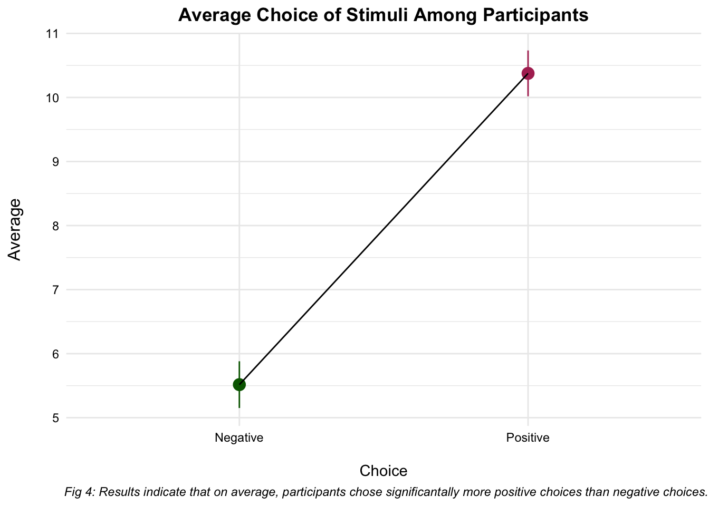

H2: Morbid Curiosity should correlate with anxiety, using a two-tailed approach
H3: Morbidly Curious individuals are more likely to expose themselves to negative stimuli
H4: Anxious individuals should experience a decrease in anxiety after expose to (voluntary) negative stimuli
Stimuli
Table 1. Stimuli Used in Study
Negative
Positive
An image of a man bleeding and screaming after a plane crash, surrounded by others running away from the crash.
(Body)
An image of a man screaming for the winning team of a basketball game.
An image of a third world country revolting against its military on the street
(Violence)
An image of a third world country coming together in a moment of prayer.
An image depicting an infamous, run-down haunted house
(Paranormal)
An image depicting a newly built suburban home
An image of a prisoner being prepared to be killed by the electric chair
(Violence)
An image of a prisoner being convicted not guilty of the charges against him.
An image of a malnourished refugee in a third-world country
(Body)
An image of a famous model, with a face of makeup, on a beach
An image of a hunter carrying the severed, bloody head of a deer they just hunted.
(Body)
An image of a person carrying a basket of fresh-picked fruit.
Watch a documentary explaining the murders of famous serial killer Dennis Nilsen, that includes his taped confession and how he carried out his murders.
(Mind)
Watch a documentary following the life of former Apple CEO, Steve Jobs.
An image of a man putting a gun in a blood man’s mouth as he pleads for mercy.
(Violence)
An image of a man comforting another man that has just been attacked.
An image of a man shooting a polar bear in the arctic.
(Violence)
An image of a man taking a photograph of a polar bear in the arctic.
Read a book that describes the rituals and magic beliefs of witches. (Paranormal)
Read a book that describes various ways to improve your gardening skills.
Read an FBI profile of serial killer John Dillinger explaining his murders and characteristics.
(Mind)
Read a profile describing the accomplishments of a well-known astronaut.
An image of a man injecting heroin on the floor in a drug den.
(Body)
An image of a man sleeping on the floor next to his two children.
Listen to a podcast that focuses on infamous serial killers and their crimes.
(Mind)
Listen to a podcast that comforts people by describing how to manage their anxieties.
An interactive video of how to play the spiritual game, Ouija. (Paranormal)
An interactive video of how to play the board game, Monopoly.
An image depicting a witch’s circle conducting a ritual.
(Paranormal)
An image depicting a church.
Read an autobiography about the life of a serial killer.
(Mind)
Read an autobiography about the life and accomplishments of Oprah Winfrey.
Data Processing
Code
# Load in Packages-------------------------------------------library(dplyr, warn.conflicts =F)# Tidying data library(stringr)# String manipulation library(ggplot2)# Plotting library(purrr)# Handling lists and iterations library(tidytext)# Tidying text library(forcats)# Dealing with categories library(readxl)# Read Excel library(patchwork)# Plotting Multiple Graphs library(tidyr)# Reshaping library(huxtable, warn.conflicts =F)# Making nice tables library(ggcorrplot, warn.conflicts =F)# Correlation heatmaplibrary(skimr)# Continuous Datalibrary(janitor, warn.conflicts =F)# Cleaan names/Chi Square# Establish Functions----------------------------------------# Correlation Test Plot Functioncorrel_test<-function(data, col1,col2){# Get Correlation: For x and y d1<-data%>%select({{col1}})%>%pull()d2<-data%>%select({{col2}})%>%pull()# Store correlation test ct<-cor.test(d1,d2)# Store DF degf<-ct$parameter%>%as.numeric()# Store Confidence Intervals # First as numbers ci<-round(ct$conf.int[1:2],2)# Then as text: 95% CI [#,#] cit<-paste0("95%CI[",ci[1],",",ci[2],"]")# Store r value rv<-round(ct$estimate,2)# Plot and annotate data%>%# Variable names are passed through with {{brackets}} ggplot(aes({{col1}},{{col2}}))+geom_point()+# To get variable in plain text, use deparse(substitute(variable)) labs(x =deparse(substitute(col1)), y =deparse(substitute(col2)), title =paste0(deparse(substitute(col1))," and ", deparse(substitute(col2))), # Pull r value or anything else you want! caption =paste0("r(",degf,")= ",rv," | ",cit))+theme_minimal()+theme(# Center Plot plot.title =element_text(hjust =.5, size =16, face ="bold"))}# Standard Error Functionse<-function(x){se<-sd(x)/sqrt(length(x))}# Rescale MC and HT# Morbid Curiosityscale_six<-function(x){(x/6)}# Horror Typologyscale_seven<-function(x){(x/7)}# Discrete Scalesdiscrete_tab<-function(data,x,lab){name<-data|>dplyr::select({{x}})|>pull()tab<-name|>tabyl()|>dplyr::select(-(starts_with("val")))|># Ignore Error for Now,,,adorn_pct_formatting(,,,percent)|>rename_with(str_to_sentence)|>hux()|>theme_article()|>set_align(everywhere,everywhere,".")# Change header row to Variable | | tab[1,]<-c(str_to_sentence(x),"","")# Get Number of Rowsto_in<-nrow(tab)tab[2:to_in,1]<-labreturn(tab)}# Read and Clean Data----------------------------------------mcu<-read_excel("UpdatedMCdata.xlsx")# Cleanmcu_cln<-mcu%>%# Get participants who finished filter(Finished=="1")%>%# Get participants who consented filter(`Consent?`=="1")%>%# Remove unneeded columns select(-DistributionChannel,-UserLanguage)%>%# Clean variable names rename_with(~gsub(" ","_",.x))%>%# Make Score Columns numeric mutate_at(vars(SC0:SC14),as.numeric)%>%# Remove SC0 and replace with scale name rename( Morbid_Curiosity_Overall =SC0, Mind =SC1, Body =SC2, Violence =SC3, Paranormal =SC4, Horror_Typology_Overall =SC5, AJ =SC6, WK =SC7, DC =SC8, Trait =SC9, State_Pre =SC10, Positive_Choice =SC11, Negative_Choice =SC12, PN_Choice =SC13, State_Post =SC14)|>mutate(# Divide all MC Total Score by 24 Morbid_Curiosity_Overall =Morbid_Curiosity_Overall/24,# Divide all HT Total Score by 19 Horror_Typology_Overall =Horror_Typology_Overall/19)|># Divide each MC Subscale Item by 6mutate_at(vars(Mind:Paranormal),scale_six)|># Divide each HT Subscale Item by 6mutate_at(vars(AJ:DC),scale_seven)# Subset Scalesmc_scaled<-mcu_cln%>%select(Morbid_Curiosity_Overall:State_Post)
Demographics
Code
demo<-mcu_cln|>clean_names()|>rename( major =major_of_study)|>select(gender,race,religion,major)gen_lab<-c("Male","Female", "Non-Binary","I prefer not to answer")race_lab<-c("Black or African American","White","Hispanic/Latino","Asian","Multi-Racial","Other")rel_lab<-c("No Religion","Christian","Buddhist","Hindu","Jewish","Muslim","Other","I prefer not to answer")major_lab<-c("Business Administration and Management", "Science, Technology, and Society","Computer Programming", "Biology/Biological Sciences", "Applied Psychology", "Other")# Get Tables for Gender, Age, Ethnicity, Politics, Race, and Educationgen<-discrete_tab(demo,"gender",gen_lab)race<-discrete_tab(demo,"race",race_lab)rel<-discrete_tab(demo,"religion",rel_lab)major<-discrete_tab(demo,"major",major_lab)# Build Tablegen|>add_rows(race)|>add_rows(rel)|>add_rows(major)|># Add Header Rowinsert_row("Variable","N","Percent")|>set_top_border(row =1:3,1:3)|>set_align(col =1, value ="left")|>set_align(1,1,"center")|>set_caption("Table 2: Participant Demographics")|>set_width(value =1)
t.test(mc_scaled$State_Post,mc_scaled$State_Pre, paired =T)|>broom::tidy()|>rename( t =statistic, p =p.value, df =parameter, `mean difference` =estimate)|>hux()|>theme_article()|>set_caption("Table 3: No significant difference (or decrease in anxiety)")|>set_caption_pos("bottom")|>set_width(value =1)
Table 3: No significant difference (or decrease in anxiety)
mean difference
t
p
df
conf.low
conf.high
method
alternative
-1.1
-1.76
0.0825
92
-2.34
0.144
Paired t-test
two.sided
Pre vs. Trait
Code
t.test(mc_scaled$State_Pre,mc_scaled$Trait,paired =T)|>tidy()|>rename( t =statistic, p =p.value, df =parameter, `mean difference` =estimate)|>hux()|>theme_article()|>set_caption("Table 4: Significant Difference between Pre Anxiety and Trait Anxiety")|>set_caption_pos("bottom")|>set_width(value =1)
Table 4: Significant Difference between Pre Anxiety and Trait Anxiety
mean difference
t
p
df
conf.low
conf.high
method
alternative
-3.15
-4.28
4.64e-05
92
-4.61
-1.69
Paired t-test
two.sided
Post vs. Trait
Code
t.test(mc_scaled$State_Post,mc_scaled$Trait,paired =T)|>broom::tidy()|>rename( t =statistic, p =p.value, df =parameter, `mean difference` =estimate)|>hux()|>theme_article()|>set_caption("Table 5: Significant Difference between Posttest Anxiety and Overall")|>set_caption_pos("bottom")|>set_width(value =1)
Table 5: Significant Difference between Posttest Anxiety and Overall
mean difference
t
p
df
conf.low
conf.high
method
alternative
-4.25
-5.38
5.6e-07
92
-5.81
-2.68
Paired t-test
two.sided
STAI Measure: Low Anxiety vs. High Anxiety (Pre)
Code
mc_scaled%>%select(State_Pre)%>%mutate(Anxiety_Level =ifelse(State_Pre>40,"High Anxiety","Low Anxiety"))%>%select(Anxiety_Level)|>table()%>%janitor::chisq.test()|>broom::tidy()|>rename( p =p.value, df =parameter)|>mutate( method ="Chi-squared test")|>hux()|>theme_article()|>set_caption("Table 6: There are significantly more 'high-anxiety' individuals compared to 'low'anxiety' individuals based on scores from the pretest measure of STAI")|>set_caption_pos("bottom")|>set_width(value =1)
Table 6: There are significantly more 'high-anxiety' individuals compared to 'low'anxiety' individuals based on scores from the pretest measure of STAI
statistic
p
df
method
25.8
3.75e-07
1
Chi-squared test
STAI Measure: Low Anxiety vs. High Anxiety (Pre)
Code
mc_scaled%>%select(State_Post)%>%mutate(Anxiety_Level =ifelse(State_Post>40,"High Anxiety","Low Anxiety"))%>%select(Anxiety_Level)%>%table()%>%janitor::chisq.test()|>broom::tidy()|>rename( p =p.value, df =parameter)|>mutate( method ="Chi-squared test")|>hux()|>theme_article()|>set_caption("Table 7: There are significantly more 'high-anxiety' individuals compared to 'low'anxiety' individuals based on scores from the posttest measure of STAI")|>set_caption_pos("bottom")|>set_width(value =1)
Table 7: There are significantly more 'high-anxiety' individuals compared to 'low'anxiety' individuals based on scores from the posttest measure of STAI
statistic
p
df
method
4.74
0.0294
1
Chi-squared test
STAI Measure: Low Anxiety vs. High Anxiety (Trait)
mc_ht.mod<-summary(lm(mc_scaled$Morbid_Curiosity_Overall~mc_scaled$Horror_Typology_Overall))# Make Tablemc_tab<-mc_ht.mod|>huxreg(error_pos ="right", statistics =character(0))|>theme_article()|>set_caption("Table 9: Model showing Morbid Curiosity Overall score as a predictor of Horror Typology Overall score")|>set_caption_pos("bottom")|>set_width(value =1)# Rename Model Namemc_tab[1,2]<-"Model 1"# Rename Model Coeficients mc_tab[2:3,1]<-c("Morbid Curiosity Overall","Horror Typology Overall")mc_tab
Table 9: Model showing Morbid Curiosity Overall score as a predictor of Horror Typology Overall score
Model 1
Morbid Curiosity Overall
1.303 **
(0.390)
Horror Typology Overall
0.583 ***
(0.110)
*** p < 0.001; ** p < 0.01; * p < 0.05.
Code
# Plot the relationshipcorrel_test(mc_scaled, Morbid_Curiosity_Overall,Horror_Typology_Overall)+labs(x ="\nMorbid Curiosity Overall", y ="Horror Typology Overall\n", title ="Morbid Curiosity Overall and Horror Typology Overall\n", caption ="Fig 3. Correlation between Morbid Curiosity and Horror Typology")+geom_abline(color ="darkred")
MC Overall and Pre/Post
Code
mc_stai.mod<-lm(Morbid_Curiosity_Overall~State_Pre+State_Post,data =mc_scaled)%>%summary()mc_st_tab<-mc_stai.mod|>huxreg(error_pos ="right", statistics =character(0))|>theme_article()|>set_caption("Table 10: Model showing Morbid Curiosity Overall score as a poor predictor of STAI Pre and Post")|>set_caption_pos("bottom")|>set_width(value =1)mc_st_tab[1,2]<-"Model 2"mc_st_tab[2,1]<-c("Morbid Curiosity Overall")mc_st_tab
Table 10: Model showing Morbid Curiosity Overall score as a poor predictor of STAI Pre and Post
Model 2
Morbid Curiosity Overall
2.958 ***
(0.651)
State_Pre
-0.004
(0.019)
State_Post
0.013
(0.016)
*** p < 0.001; ** p < 0.01; * p < 0.05.
Negative & Positive Choice
Code
mc_scaled|>select(Positive_Choice, Negative_Choice)|>rename_with(~gsub("_Choice", "", .x, ))|>pivot_longer(cols =everything(), names_to ="Choice", values_to ="Picked")|>group_by(Choice)|>summarize(M =mean(Picked), SE =se(Picked))|>ggplot(aes(Choice, M))+geom_pointrange(aes( ymin =M-SE, ymax =M+SE, colour =Choice), fatten =6, show.legend =F)+geom_line(group =1)+theme_minimal()+labs(x ="\nChoice", y ="Average\n", title ="Average Choice of Stimuli Among Participants", caption ="Fig 4: Results indicate that on average, participants chose significantally more positive choices than negative choices.")+theme(axis.text =element_text(color ="black"), plot.title =element_text(hjust =0.5, face ="bold"), axis.title.y =element_text(size =12), plot.caption =element_text(hjust =.2, face ="italic"))+scale_color_manual(values =c("darkgreen", "maroon"))

Negative/Positive choice:
Code
choice_tt<-t.test(mc_scaled$Negative_Choice,mc_scaled$Positive_Choice, paired =T, var.equal =T)choice_tt|>tidy()|>rename( t =statistic, p =p.value, df =parameter, `mean difference` =estimate)|>hux()|>theme_article()|>set_caption("Table 11: Paired t-test showing participants chose significantally more positive items.")|>set_caption_pos("bottom")|>set_width(value =1)
# Separate Gender and MCgen_tt<-mcu_cln%>%select(Gender,Morbid_Curiosity_Overall)%>%filter(Gender%in%1:2)|>mutate(Gender =ifelse(Gender==1,"Male","Female"))t.test(gen_tt$Morbid_Curiosity_Overall~gen_tt$Gender)|>tidy()|>rename( t =statistic, p =p.value, df =parameter, `mean difference` =estimate, Female =estimate1, Male =estimate2)|>hux()|>theme_article()|>set_caption("Table 12: Independent t-test shows no significant difference between scores on Morbid Curiosity Scale.")|>set_caption_pos("bottom")|>set_width(value =1)
Table 12: Independent t-test shows no significant difference between scores on Morbid Curiosity Scale.
mean difference
Female
Male
t
p
df
conf.low
conf.high
method
alternative
-0.228
3.23
3.46
-0.999
0.324
39.3
-0.689
0.233
Welch Two Sample t-test
two.sided
Horror Typology and Gender
Code
genht_tt<-mcu_cln%>%select(Gender,Horror_Typology_Overall)%>%filter(Gender%in%1:2)|>mutate(Gender =ifelse(Gender==1,"Male","Female"))t.test(genht_tt$Horror_Typology_Overall~genht_tt$Gender)|>broom::tidy()|>rename( t =statistic, p =p.value, df =parameter, `mean difference` =estimate, Female =estimate1, Male =estimate2)|>hux()|>theme_article()|>set_caption("Table 13: Independent t-test shows no significant difference between scores on Horror Typology Scale.")|>set_caption_pos("bottom")|>set_width(value =1)
Table 13: Independent t-test shows no significant difference between scores on Horror Typology Scale.
mean difference
Female
Male
t
p
df
conf.low
conf.high
method
alternative
-0.0118
3.47
3.48
-0.076
0.94
62.5
-0.323
0.299
Welch Two Sample t-test
two.sided
Morbid Curiosity and Participant Major
Code
mj_mc<-mcu_cln%>%clean_names()|>select(major_of_study,morbid_curiosity_overall)%>%mutate(major_of_study =case_when(major_of_study==1~"Business Administration and Management", major_of_study==2~"Science, Technology, and Society", major_of_study==3~"Computer Programming", major_of_study==4~"Biology/Biological Sciences",major_of_study==5~"Mechanical Engineering", major_of_study==6~"Applied Psychology", major_of_study==7~"Other"))# Create aov_car objectaov(mj_mc$morbid_curiosity_overall~mj_mc$major_of_study)
Call:
aov(formula = mj_mc$morbid_curiosity_overall ~ mj_mc$major_of_study)
Terms:
mj_mc$major_of_study Residuals
Sum of Squares 8.07377 66.98380
Deg. of Freedom 5 87
Residual standard error: 0.8774559
Estimated effects may be unbalanced
General Questions:
I consider myself to be morbidly curious?
Code
gen_quest<-mcu_cln|>clean_names()|>rename( people_mc =a_d1, self_mc =a_d2, self_anx =a_d3, self_hor =a_d4)|>mutate_at(vars(people_mc:self_hor),as.numeric)cor.test(gen_quest$self_mc,gen_quest$morbid_curiosity_overall)|>tidy()|>rename( df =parameter, p =p.value, t =statistic, r =estimate)|>hux()|>theme_article()|>set_caption("Table 14: Participants self rating of being morbidly curious was significantlly positivly correlated with morbid curiosity score")|>set_caption_pos("bottom")|>set_width(value =1)
Table 14: Participants self rating of being morbidly curious was significantlly positivly correlated with morbid curiosity score
r
t
p
df
conf.low
conf.high
method
alternative
0.525
5.89
6.4e-08
91
0.36
0.659
Pearson's product-moment correlation
two.sided
I consider myself to enjoy horror related content such Books, TV shows, Movies, Attractions, Podcast, etc.
Code
cor.test(gen_quest$self_hor,gen_quest$horror_typology_overall)|>tidy()|>rename( df =parameter, p =p.value, t =statistic, r =estimate)|>hux()|>theme_article()|>set_caption("Table 15: Participants self rating of enjoying the horror genre was significantlly positivly correlated with horror typology score")|>set_caption_pos("bottom")|>set_width(value =1)
Table 15: Participants self rating of enjoying the horror genre was significantlly positivly correlated with horror typology score
r
t
p
df
conf.low
conf.high
method
alternative
0.521
5.82
8.87e-08
91
0.354
0.655
Pearson's product-moment correlation
two.sided
I consider myself to be an anxious person.
Code
cor.test(gen_quest$self_anx, gen_quest$trait)|>tidy()|>rename( df =parameter, p =p.value, t =statistic, r =estimate)|>hux()|>theme_article()|>set_caption("Table 16: Participants self rating of anxiety was significantly positively correlated with the trait measure of anxiety.")|>set_caption_pos("bottom")|>set_width(value =1)
Table 16: Participants self rating of anxiety was significantly positively correlated with the trait measure of anxiety.
r
t
p
df
conf.low
conf.high
method
alternative
0.11
1.06
0.292
91
-0.0955
0.307
Pearson's product-moment correlation
two.sided
I find people to be morbidly curious.
Code
t.test(gen_quest$people_mc, mu =4, alternative ="greater")|>broom::tidy()|>rename( t =statistic, p =p.value, df =parameter, `mean difference` =estimate)|>hux()|>theme_article()|>set_caption("Table 17: Single-sample t-test against the midpoint of 4 showed that people generally believe others to be morbidly curious.")|>set_caption_pos("bottom")|>set_width(value =1)
Table 17: Single-sample t-test against the midpoint of 4 showed that people generally believe others to be morbidly curious.
Table 18: Descriptive statistics of all numeric variables.
variable
M(SD)
hist
age
21.86(5.4)
▇▁▁▁▁
self_mc
4.6(1.92)
▃▁▂▃▇
self_anx
5.27(1.63)
▁▂▁▃▇
self_hor
4.31(2.15)
▆▂▂▃▇
b1
2.51(1.65)
▇▂▂▁▁
b2
3.8(1.72)
▇▃▇▇▆
b3
2.97(1.7)
▇▂▃▂▂
b4
2.57(1.62)
▇▁▂▂▁
b5
2.62(1.57)
▇▁▃▁▁
b6
3.49(1.65)
▇▂▇▅▃
m1
3.69(1.79)
▇▂▃▃▅
m2
4.49(1.58)
▃▂▂▆▇
m3
4.45(1.37)
▅▂▇▇▇
m4
4.54(1.51)
▃▂▅▆▇
m5
4.47(1.53)
▃▁▅▅▇
m6
4.51(1.46)
▃▂▆▆▇
p1
4.4(1.55)
▅▂▆▇▇
p2
2.84(1.66)
▇▂▃▂▁
p3
3.9(1.6)
▇▂▇▆▆
p4
2.96(1.61)
▇▃▅▂▂
p5
3.39(1.73)
▇▃▅▃▃
v1
2.11(1.4)
▇▁▂▁▁
v2
2.94(1.72)
▇▂▃▂▂
v3
3(1.52)
▇▃▅▃▁
v4
3.35(1.66)
▇▂▇▃▂
v5
3.3(1.62)
▇▅▆▃▃
v6
3.42(1.64)
▇▃▆▃▃
aj1
3.41(1.98)
▇▂▂▃▃
aj2
3.74(2.17)
▇▁▂▂▆
aj3
3.27(2.07)
▇▂▂▁▃
aj4
4.39(2.16)
▆▁▁▃▇
aj5
3.1(2.03)
▇▁▂▂▂
aj6
4.13(2.12)
▇▁▂▅▇
wk1
3.75(2.03)
▇▁▃▅▅
wk2
4.52(1.95)
▆▁▂▆▇
wk3
4.66(1.93)
▅▁▂▃▇
wk4
2.6(1.88)
▇▁▁▁▂
wk5
4.76(1.71)
▃▂▂▇▇
wk6
4.38(1.89)
▅▂▅▃▇
dc1
1.86(1.32)
▇▁▁▁▁
dc2
2.45(1.71)
▇▁▂▁▁
dc3
1.89(1.32)
▇▁▁▁▁
dc4
3.76(1.9)
▇▂▇▅▅
dc5
3.59(1.75)
▇▁▇▃▃
dc6
3.3(1.92)
▇▁▅▂▂
dc7
2.25(1.45)
▇▁▂▁▁
state_1
2.96(0.91)
▁▆▁▇▇
state_2
2.94(0.93)
▁▇▁▇▇
state_3
1.86(0.88)
▇▇▁▃▁
state_4
1.72(0.83)
▇▅▁▃▁
state_5
2.59(0.94)
▃▆▁▇▃
state_6
1.35(0.75)
▇▂▁▁▁
state_7
1.98(1.02)
▇▅▁▃▂
state_8
2.6(0.97)
▃▇▁▇▅
state_9
1.23(0.57)
▇▁▁▁▁
state_10
2.98(0.82)
▁▆▁▇▆
state_11
2.62(1.04)
▅▇▁▇▆
state_12
1.72(0.88)
▇▅▁▂▁
state_13
1.72(0.9)
▇▆▁▁▁
state_14
2.03(1.09)
▇▃▁▃▂
state_15
2.76(0.93)
▂▇▁▇▆
state_16
2.68(0.86)
▂▇▁▇▃
state_17
1.69(0.91)
▇▅▁▁▁
state_18
1.6(0.93)
▇▂▁▂▁
state_19
2.54(1.06)
▆▇▁▇▆
state_20
2.58(0.96)
▃▇▁▇▅
trait_1
2.69(0.94)
▂▇▁▆▅
trait_2
2.3(1)
▆▇▁▆▃
trait_3
2.45(0.92)
▂▇▁▆▃
trait_4
2.46(1.09)
▆▇▁▅▆
trait_5
1.85(0.95)
▇▆▁▂▂
trait_6
2.04(0.97)
▇▆▁▆▂
trait_7
2.61(0.93)
▃▇▁▇▅
trait_8
2.24(1.09)
▇▇▁▅▅
trait_9
2.86(1.09)
▂▆▁▃▇
trait_10
2.74(0.92)
▂▇▁▇▆
trait_11
1.48(0.73)
▇▃▁▁▁
trait_12
2.29(1.06)
▆▇▁▅▅
trait_13
2.72(0.96)
▂▇▁▅▆
trait_14
2.18(0.95)
▆▇▁▆▂
trait_15
1.87(0.95)
▇▆▁▃▂
trait_16
2.74(0.91)
▂▇▁▇▆
trait_17
2.35(1.04)
▇▇▁▇▅
trait_18
2.42(1.11)
▇▇▁▇▆
trait_19
2.63(0.96)
▃▆▁▇▅
trait_20
2.35(1.08)
▇▅▁▇▃
post_state_1
2.84(0.9)
▁▇▁▆▆
post_state_2
2.85(0.91)
▁▇▁▆▆
post_state_3
1.89(0.96)
▇▇▁▂▂
post_state_4
1.63(0.89)
▇▃▁▂▁
post_state_5
2.56(0.96)
▃▇▁▇▅
post_state_6
1.32(0.63)
▇▂▁▁▁
post_state_7
1.94(1)
▇▅▁▃▂
post_state_8
2.58(0.99)
▃▇▁▇▅
post_state_9
1.3(0.6)
▇▁▂▁▁
post_state_10
2.81(0.91)
▂▇▁▇▆
post_state_11
2.46(1.07)
▆▇▁▇▆
post_state_12
1.65(0.8)
▇▅▁▂▁
post_state_13
1.62(0.85)
▇▅▁▁▁
post_state_14
1.89(0.96)
▇▇▁▂▂
post_state_15
2.7(0.96)
▃▇▁▇▆
post_state_16
2.63(0.93)
▂▇▁▇▅
post_state_17
1.66(0.77)
▇▇▁▁▁
post_state_18
1.55(0.83)
▇▃▁▁▁
post_state_19
2.56(1.08)
▆▇▁▇▇
post_state_20
2.61(1)
▃▇▁▇▆
morbid_curiosity_overall
3.32(0.9)
▃▇▇▇▅
mind
4.36(1.3)
▂▃▃▆▇
body
2.99(1.23)
▇▇▇▅▃
violence
3.02(1.24)
▆▆▇▃▂
paranormal
2.91(1.11)
▅▅▇▇▂
horror_typology_overall
3.46(0.75)
▃▇▆▂▁
aj
3.15(1.52)
▇▅▆▅▅
wk
3.52(1.19)
▂▆▇▅▃
dc
2.73(0.98)
▃▇▅▂▁
state_pre
44.15(6.73)
▁▃▇▅▁
state_post
43.05(7.64)
▂▆▇▂▁
trait
47.3(6.8)
▆▇▇▃▂
positive_choice
10.38(3.45)
▁▆▇▇▇
negative_choice
5.52(3.52)
▇▇▇▃▁
Source Code
---title: "Morbid Curiosity, Anxiety & VANE"author: "Brendan Jaghab & David Brocker"format: html: code-fold: true code-link: true code-tools: true toc: true toc-depth: 3 toc-location: lefteditor: visualtheme: light: flatly dark: darkly---## Hypotheses:**H1:** [Morbid Curiosity](https://uploads.strikinglycdn.com/files/bf7f54ad-91cf-49f6-b465-4afae046eb5b/Morbid%20Curiosity%20Scale%20instructions.pdf?id=3713948 "View MC Scale") should correlate and predict [Horror Typology](https://github.com/DavidBrocker/Morbid/blob/main/scales/The%20psychological%20benefits%20of%20scary%20play%20in%20three%20types%20of%20horror%20fans_preprint%20(6).pdf "View HT Scale").**H2:** Morbid Curiosity should correlate with [anxiety](https://oml.eular.org/sysModules/obxOML/docs/id_150/State-Trait-Anxiety-Inventory.pdf#page=3 "View STAI"), using a two-tailed approach**H3:** Morbidly Curious individuals are more likely to expose themselves to negative stimuli**H4:** Anxious individuals should experience a decrease in anxiety after expose to (voluntary) negative stimuli## Stimuli+----------------------------------------------------------------------------------------------------------------------------------------------------------+---------------------------------------------------------------------------------------+| Negative | Positive |+==========================================================================================================================================================+=======================================================================================+| An image of a man bleeding and screaming after a plane crash, surrounded by others running away from the crash. | An image of a man screaming for the winning team of a basketball game. || | || (**Body**) | |+----------------------------------------------------------------------------------------------------------------------------------------------------------+---------------------------------------------------------------------------------------+| An image of a third world country revolting against its military on the street | An image of a third world country coming together in a moment of prayer. || | || (**Violence**) | |+----------------------------------------------------------------------------------------------------------------------------------------------------------+---------------------------------------------------------------------------------------+| An image depicting an infamous, run-down haunted house | An image depicting a newly built suburban home || | || (**Paranormal**) | |+----------------------------------------------------------------------------------------------------------------------------------------------------------+---------------------------------------------------------------------------------------+| An image of a prisoner being prepared to be killed by the electric chair | An image of a prisoner being convicted not guilty of the charges against him. || | || (**Violence**) | |+----------------------------------------------------------------------------------------------------------------------------------------------------------+---------------------------------------------------------------------------------------+| An image of a malnourished refugee in a third-world country | An image of a famous model, with a face of makeup, on a beach || | || (**Body**) | |+----------------------------------------------------------------------------------------------------------------------------------------------------------+---------------------------------------------------------------------------------------+| An image of a hunter carrying the severed, bloody head of a deer they just hunted. | An image of a person carrying a basket of fresh-picked fruit. || | || (**Body**) | |+----------------------------------------------------------------------------------------------------------------------------------------------------------+---------------------------------------------------------------------------------------+| Watch a documentary explaining the murders of famous serial killer Dennis Nilsen, that includes his taped confession and how he carried out his murders. | Watch a documentary following the life of former Apple CEO, Steve Jobs. || | || (**Mind**) | |+----------------------------------------------------------------------------------------------------------------------------------------------------------+---------------------------------------------------------------------------------------+| An image of a man putting a gun in a blood man's mouth as he pleads for mercy. | An image of a man comforting another man that has just been attacked. || | || (**Violence**) | |+----------------------------------------------------------------------------------------------------------------------------------------------------------+---------------------------------------------------------------------------------------+| An image of a man shooting a polar bear in the arctic. | An image of a man taking a photograph of a polar bear in the arctic. || | || (**Violence**) | |+----------------------------------------------------------------------------------------------------------------------------------------------------------+---------------------------------------------------------------------------------------+| Read a book that describes the rituals and magic beliefs of witches. (**Paranormal**) | Read a book that describes various ways to improve your gardening skills. |+----------------------------------------------------------------------------------------------------------------------------------------------------------+---------------------------------------------------------------------------------------+| Read an FBI profile of serial killer John Dillinger explaining his murders and characteristics. | Read a profile describing the accomplishments of a well-known astronaut. || | || (**Mind**) | |+----------------------------------------------------------------------------------------------------------------------------------------------------------+---------------------------------------------------------------------------------------+| An image of a man injecting heroin on the floor in a drug den. | An image of a man sleeping on the floor next to his two children. || | || (**Body**) | |+----------------------------------------------------------------------------------------------------------------------------------------------------------+---------------------------------------------------------------------------------------+| Listen to a podcast that focuses on infamous serial killers and their crimes. | Listen to a podcast that comforts people by describing how to manage their anxieties. || | || (**Mind**) | |+----------------------------------------------------------------------------------------------------------------------------------------------------------+---------------------------------------------------------------------------------------+| An interactive video of how to play the spiritual game, Ouija. (**Paranormal**) | An interactive video of how to play the board game, Monopoly. |+----------------------------------------------------------------------------------------------------------------------------------------------------------+---------------------------------------------------------------------------------------+| An image depicting a witch's circle conducting a ritual. | An image depicting a church. || | || (**Paranormal**) | |+----------------------------------------------------------------------------------------------------------------------------------------------------------+---------------------------------------------------------------------------------------+| Read an autobiography about the life of a serial killer. | Read an autobiography about the life and accomplishments of Oprah Winfrey. || | || **(Mind)** | |+----------------------------------------------------------------------------------------------------------------------------------------------------------+---------------------------------------------------------------------------------------+: Table 1. Stimuli Used in Study### Data Processing```{r}# Load in Packages-------------------------------------------library(dplyr, warn.conflicts = F) # Tidying data library(stringr) # String manipulation library(ggplot2) # Plotting library(purrr) # Handling lists and iterations library(tidytext) # Tidying text library(forcats) # Dealing with categories library(readxl) # Read Excel library(patchwork) # Plotting Multiple Graphs library(tidyr) # Reshaping library(huxtable, warn.conflicts = F) # Making nice tables library(ggcorrplot, warn.conflicts = F) # Correlation heatmaplibrary(skimr) # Continuous Datalibrary(janitor, warn.conflicts = F) # Cleaan names/Chi Square# Establish Functions----------------------------------------# Correlation Test Plot Functioncorrel_test <-function(data, col1,col2){# Get Correlation: For x and y d1 <- data %>%select({{col1}}) %>%pull() d2 <- data %>%select({{col2}}) %>%pull()# Store correlation test ct <-cor.test(d1,d2)# Store DF degf <- ct$parameter %>%as.numeric()# Store Confidence Intervals # First as numbers ci <-round(ct$conf.int[1:2],2)# Then as text: 95% CI [#,#] cit <-paste0("95%CI[",ci[1],",",ci[2],"]")# Store r value rv <-round(ct$estimate,2)# Plot and annotate data %>%# Variable names are passed through with {{brackets}} ggplot(aes({{col1}},{{col2}}))+geom_point() +# To get variable in plain text, use deparse(substitute(variable)) labs(x =deparse(substitute(col1)), y =deparse(substitute(col2)), title =paste0( deparse( substitute(col1))," and ", deparse(substitute(col2))), # Pull r value or anything else you want! caption =paste0("r(",degf,")= ",rv," | ",cit)) +theme_minimal() +theme( # Center Plot plot.title =element_text(hjust = .5, size =16, face ="bold"))}# Standard Error Functionse <-function(x) { se <-sd(x)/sqrt(length(x)) }# Rescale MC and HT# Morbid Curiosityscale_six <-function(x) {(x/6)} # Horror Typologyscale_seven <-function(x) {(x/7)} # Discrete Scalesdiscrete_tab <-function(data,x,lab){ name <- data |> dplyr::select({{x}}) |>pull() tab <- name |>tabyl() |> dplyr::select(-(starts_with("val"))) |># Ignore Error for Now,,,adorn_pct_formatting(,,,percent) |>rename_with(str_to_sentence) |>hux() |>theme_article() |>set_align(everywhere,everywhere,".")# Change header row to Variable | | tab[1,] <-c(str_to_sentence(x),"","")# Get Number of Rows to_in <-nrow(tab) tab[2:to_in,1] <- labreturn(tab)}# Read and Clean Data---------------------------------------- mcu <-read_excel("UpdatedMCdata.xlsx")# Clean mcu_cln <- mcu %>%# Get participants who finished filter(Finished =="1") %>%# Get participants who consented filter(`Consent?`=="1") %>%# Remove unneeded columns select(-DistributionChannel,-UserLanguage) %>%# Clean variable names rename_with(~gsub(" ","_",.x)) %>%# Make Score Columns numeric mutate_at(vars(SC0:SC14),as.numeric) %>%# Remove SC0 and replace with scale name rename( Morbid_Curiosity_Overall = SC0, Mind = SC1, Body = SC2, Violence = SC3,Paranormal = SC4, Horror_Typology_Overall = SC5, AJ = SC6, WK = SC7, DC = SC8, Trait = SC9, State_Pre = SC10, Positive_Choice = SC11,Negative_Choice = SC12,PN_Choice = SC13, State_Post = SC14) |>mutate(# Divide all MC Total Score by 24Morbid_Curiosity_Overall = Morbid_Curiosity_Overall/24,# Divide all HT Total Score by 19Horror_Typology_Overall = Horror_Typology_Overall/19 ) |># Divide each MC Subscale Item by 6mutate_at(vars(Mind:Paranormal),scale_six) |># Divide each HT Subscale Item by 6mutate_at(vars(AJ:DC),scale_seven)# Subset Scales mc_scaled <- mcu_cln %>%select(Morbid_Curiosity_Overall:State_Post)```## Demographics```{r}demo <- mcu_cln |>clean_names() |>rename(major = major_of_study ) |>select(gender,race,religion,major)gen_lab <-c("Male","Female", "Non-Binary","I prefer not to answer")race_lab <-c("Black or African American","White","Hispanic/Latino","Asian","Multi-Racial","Other")rel_lab <-c("No Religion","Christian","Buddhist","Hindu","Jewish","Muslim","Other","I prefer not to answer")major_lab <-c("Business Administration and Management", "Science, Technology, and Society","Computer Programming", "Biology/Biological Sciences", "Applied Psychology", "Other")# Get Tables for Gender, Age, Ethnicity, Politics, Race, and Educationgen <-discrete_tab(demo,"gender",gen_lab)race <-discrete_tab(demo,"race",race_lab)rel <-discrete_tab(demo,"religion",rel_lab)major <-discrete_tab(demo,"major",major_lab)# Build Tablegen |>add_rows(race) |>add_rows(rel) |>add_rows(major) |># Add Header Rowinsert_row("Variable","N","Percent") |>set_top_border(row =1:3,1:3) |>set_align(col =1, value ="left") |>set_align(1,1,"center") |>set_caption("Table 2: Participant Demographics") |>set_width(value =1)```## Correlations```{r}# Clean variable namex_var_names <-c("Positive Choice", "Trait", "Pre State", "Post State", "Dark Copers", "HT", "Adrenaline Junkies", "Body","Negative Choice","MC", "Mind", "Violence", "Paranormal")y_var_names <-c("Violence", "Mind", "MC", "Negative Choice", "Body", "Adrenaline Junkies", "HT", "Dark Copers", "Post State", "Pre State", "Trait", "Positive Choice","White Knuclers")# Create Cor Matrixheat_plot <- mc_scaled |> janitor::clean_names() |>select(-pn_choice) |>cor()# Get p-value matrixheat_pmat <- heat_plot |>cor_pmat(sig.level = .05)# Plotheat_plot |>ggcorrplot(type ="lower",hc.order =TRUE,p.mat = heat_pmat,#insig = "pch",lab =TRUE,method ="circle",lab_size =2,colors =c("#780000","white","#003049"),legend.title ="Correlation") +scale_y_discrete(labels = y_var_names, position='right') +scale_x_discrete(labels = x_var_names, position ="bottom") +labs(caption ="Fig 1. Correlation Matrix Across all numeric variables. Crossed items represent non-significant correlations" ) +theme(axis.text.x =element_text(angle =90, hjust =1),plot.caption =element_text(face ="italic",hjust = .2)) ```## State and Trait Comparisons```{r}cor_item <- mc_scaled |>select(-PN_Choice) |>relocate(State_Post, .before = State_Pre) |>cor(mc_scaled) |>round(2) |>as_tibble(rownames ="Var") cor_item <- cor_item |>as.matrix()diag(cor_item) <-NAcor_item[upper.tri(cor_item)] <-NAcor_item[is.na(cor_item)] <-""cor_item |>hux() |>theme_article()|>set_width(value =1)```### Post vs. Pre```{r}t.test(mc_scaled$State_Post,mc_scaled$State_Pre, paired = T) |> broom::tidy() |>rename(t = statistic,p = p.value, df = parameter,`mean difference`= estimate ) |>hux() |>theme_article() |>set_caption("Table 3: No significant difference (or decrease in anxiety)") |>set_caption_pos("bottom")|>set_width(value =1)```### Pre vs. Trait```{r}t.test(mc_scaled$State_Pre,mc_scaled$Trait,paired = T) |>tidy() |>rename(t = statistic,p = p.value, df = parameter,`mean difference`= estimate ) |>hux() |>theme_article() |>set_caption("Table 4: Significant Difference between Pre Anxiety and Trait Anxiety") |>set_caption_pos("bottom")|>set_width(value =1)```### Post vs. Trait```{r}t.test(mc_scaled$State_Post,mc_scaled$Trait,paired = T) |> broom::tidy() |>rename(t = statistic, p = p.value, df = parameter,`mean difference`= estimate ) |>hux() |>theme_article() |>set_caption("Table 5: Significant Difference between Posttest Anxiety and Overall") |>set_caption_pos("bottom")|>set_width(value =1)```### STAI Measure: Low Anxiety vs. High Anxiety (Pre)```{r}mc_scaled %>%select(State_Pre) %>%mutate(Anxiety_Level =ifelse(State_Pre>40,"High Anxiety","Low Anxiety")) %>%select(Anxiety_Level) |>table() %>% janitor::chisq.test() |> broom::tidy() |>rename(p = p.value, df = parameter ) |>mutate(method ="Chi-squared test" ) |>hux() |>theme_article() |>set_caption("Table 6: There are significantly more 'high-anxiety' individuals compared to 'low'anxiety' individuals based on scores from the pretest measure of STAI") |>set_caption_pos("bottom") |>set_width(value =1)```### STAI Measure: Low Anxiety vs. High Anxiety (Pre)```{r}mc_scaled %>%select(State_Post) %>%mutate(Anxiety_Level =ifelse(State_Post >40,"High Anxiety","Low Anxiety")) %>%select(Anxiety_Level) %>%table() %>% janitor::chisq.test() |> broom::tidy() |>rename(p = p.value, df = parameter ) |>mutate(method ="Chi-squared test" ) |>hux() |>theme_article() |>set_caption("Table 7: There are significantly more 'high-anxiety' individuals compared to 'low'anxiety' individuals based on scores from the posttest measure of STAI") |>set_caption_pos("bottom")|>set_width(value =1)```### STAI Measure: Low Anxiety vs. High Anxiety (Trait)```{r}mc_scaled %>%select(Trait) %>%mutate(Anxiety_Level =ifelse(Trait >40,"High Anxiety","Low Anxiety")) %>%select(Anxiety_Level) %>%table() %>% janitor::chisq.test() |> broom::tidy() |>rename(p = p.value, df = parameter ) |>mutate(method ="Chi-squared test" ) |>hux() |>theme_article() |>set_caption("Table 8: There are significantly more 'high-anxiety' individuals compared to 'low'anxiety' individuals based on scores from the trait measure of STAI") |>set_caption_pos("bottom")|>set_width(value =1)``````{r}mc_scaled %>%select(starts_with("State")) %>%rename_with(~gsub("State_","",.x)) |>pivot_longer(cols =everything(),names_to ="time",values_to ="score") |>mutate(time =factor(time, levels =c("Pre", "Post"))) |>group_by(time) |>summarize(mean =mean(score),se =se(score)) %>%ggplot(aes(time,mean)) +geom_pointrange(aes(ymin = mean - se, ymax = mean + se)) +scale_color_manual(values =c("red", "black")) +theme_minimal() +labs(x ="\nTime",y ="Average\n",title ="Average State Anxiety Scores Before & After VANE\n",caption ="Fig. 2: No significant decrease in anxiety levels after exposure to VANE." ) +theme(plot.title =element_text(hjust =0.5,face ="bold"),plot.caption =element_text(hjust = .2,face ="italic")) +ylim(30,46)```## Regressions### Horror Typology as a function of Morbid Curiosity```{r}mc_ht.mod <-summary(lm(mc_scaled$Morbid_Curiosity_Overall ~ mc_scaled$Horror_Typology_Overall))# Make Tablemc_tab <- mc_ht.mod |>huxreg(error_pos ="right",statistics =character(0)) |>theme_article() |>set_caption("Table 9: Model showing Morbid Curiosity Overall score as a predictor of Horror Typology Overall score") |>set_caption_pos("bottom") |>set_width(value =1)# Rename Model Namemc_tab[1,2] <-"Model 1"# Rename Model Coeficients mc_tab[2:3,1] <-c("Morbid Curiosity Overall","Horror Typology Overall")mc_tab# Plot the relationshipcorrel_test(mc_scaled, Morbid_Curiosity_Overall,Horror_Typology_Overall) +labs(x ="\nMorbid Curiosity Overall",y ="Horror Typology Overall\n",title ="Morbid Curiosity Overall and Horror Typology Overall\n",caption ="Fig 3. Correlation between Morbid Curiosity and Horror Typology") +geom_abline(color ="darkred") ```### MC Overall and Pre/Post```{r}mc_stai.mod <-lm(Morbid_Curiosity_Overall~ State_Pre + State_Post,data = mc_scaled) %>%summary() mc_st_tab <- mc_stai.mod |>huxreg(error_pos ="right",statistics =character(0)) |>theme_article() |>set_caption("Table 10: Model showing Morbid Curiosity Overall score as a poor predictor of STAI Pre and Post") |>set_caption_pos("bottom")|>set_width(value =1)mc_st_tab[1,2] <-"Model 2"mc_st_tab[2,1] <-c("Morbid Curiosity Overall")mc_st_tab```## Negative & Positive Choice```{r}mc_scaled |>select(Positive_Choice, Negative_Choice) |>rename_with( ~gsub("_Choice", "", .x, )) |>pivot_longer(cols =everything(),names_to ="Choice",values_to ="Picked") |>group_by(Choice) |>summarize(M =mean(Picked),SE =se(Picked)) |>ggplot(aes(Choice, M)) +geom_pointrange(aes(ymin = M - SE,ymax = M + SE,colour = Choice),fatten =6,show.legend = F) +geom_line(group =1) +theme_minimal() +labs(x ="\nChoice",y ="Average\n",title ="Average Choice of Stimuli Among Participants",caption ="Fig 4: Results indicate that on average, participants chose significantally more positive choices than negative choices.") +theme(axis.text =element_text(color ="black"),plot.title =element_text(hjust =0.5, face ="bold"),axis.title.y =element_text(size =12),plot.caption =element_text(hjust = .2,face ="italic")) +scale_color_manual(values =c("darkgreen", "maroon"))```### Negative/Positive choice:```{r}choice_tt <-t.test(mc_scaled$Negative_Choice,mc_scaled$Positive_Choice,paired = T,var.equal = T) choice_tt |>tidy() |>rename(t = statistic,p = p.value, df = parameter,`mean difference`= estimate ) |>hux() |>theme_article() |>set_caption("Table 11: Paired t-test showing participants chose significantally more positive items.") |>set_caption_pos("bottom")|>set_width(value =1)``````{r}mc_neg.mod <-lm(data = mc_scaled, Morbid_Curiosity_Overall ~ Negative_Choice) |>summary()mc_neg.mod_tab <- mc_neg.mod |>huxreg(error_pos ="right",statistics =character(0)) |>theme_article() |>set_caption("Table 12: Model showing negative choice selection is accurately predicted by Morbid Curiosity Scale score") |>set_caption_pos("bottom")|>set_width(value =1)mc_neg.mod_tab[1,2] <-"Model 3"mc_neg.mod_tab[2,1] <-"Morbid Curiosity Scale"mc_neg.mod_tab``````{r}#| message: falsemcu_cln |>ggplot(aes(Morbid_Curiosity_Overall,Negative_Choice)) +geom_point() +theme_minimal() +geom_smooth(method ="lm") +labs(x ="\nMorbid Curiosity Score", y ="Number of Negative Choices\n",caption ="Fig 5: Correlation between overall Morbid Curiosity and subsequent number of negative items picked: (r = .66, r2 = .43)") +theme(plot.caption =element_text(face ="italic",hjust = .2),axis.text =element_text(color ="black") )```## Text Analysis```{r}mcu_cln %>%filter(Finished =="1") %>%filter('Consent?'=="1") %>%# Isolate Participant & Comment select(ResponseId,Why) %>%# Separate each sentence into word by word unnest_tokens(word,Why) %>%# Remove stop_words anti_join(stop_words) %>%count(word,sort = T) %>%na.omit() %>%top_n(20,n) %>%ggplot(aes(reorder(word,n),n,fill =n)) +geom_bar(stat ="identity", show.legend = F)+coord_flip() +theme_minimal() +labs( y ="Frequency/n", x ="/nWord", title ="Most Frequently Used Words") +theme(axis.text.x =element_text(hjust =1)) +scale_fill_continuous()```## Morbid Curiosity and Gender```{r}# Separate Gender and MCgen_tt <- mcu_cln %>%select(Gender,Morbid_Curiosity_Overall) %>%filter(Gender %in%1:2) |>mutate(Gender =ifelse(Gender ==1,"Male","Female"))t.test(gen_tt$Morbid_Curiosity_Overall~gen_tt$Gender) |>tidy() |>rename(t = statistic,p = p.value, df = parameter,`mean difference`= estimate,Female = estimate1,Male = estimate2 ) |>hux() |>theme_article() |>set_caption("Table 12: Independent t-test shows no significant difference between scores on Morbid Curiosity Scale.") |>set_caption_pos("bottom")|>set_width(value =1)```## Horror Typology and Gender```{r}genht_tt <- mcu_cln %>%select(Gender,Horror_Typology_Overall) %>%filter(Gender %in%1:2) |>mutate(Gender =ifelse(Gender ==1,"Male","Female")) t.test(genht_tt$Horror_Typology_Overall~genht_tt$Gender) |> broom::tidy() |>rename(t = statistic,p = p.value, df = parameter,`mean difference`= estimate,Female = estimate1,Male = estimate2 ) |>hux() |>theme_article() |>set_caption("Table 13: Independent t-test shows no significant difference between scores on Horror Typology Scale.") |>set_caption_pos("bottom")|>set_width(value =1)```## Morbid Curiosity and Participant Major```{r}mj_mc <- mcu_cln %>%clean_names() |>select(major_of_study,morbid_curiosity_overall) %>%mutate(major_of_study =case_when( major_of_study ==1~"Business Administration and Management", major_of_study ==2~"Science, Technology, and Society", major_of_study ==3~"Computer Programming", major_of_study ==4~"Biology/Biological Sciences", major_of_study ==5~"Mechanical Engineering", major_of_study ==6~"Applied Psychology", major_of_study ==7~"Other"))# Create aov_car objectaov(mj_mc$morbid_curiosity_overall ~ mj_mc$major_of_study)```## General Questions:I consider myself to be morbidly curious?```{r}gen_quest <- mcu_cln |>clean_names() |>rename(people_mc = a_d1, self_mc = a_d2, self_anx = a_d3,self_hor = a_d4 ) |>mutate_at(vars(people_mc:self_hor),as.numeric)cor.test(gen_quest$self_mc,gen_quest$morbid_curiosity_overall) |>tidy() |>rename(df = parameter,p = p.value,t = statistic,r = estimate ) |>hux() |>theme_article() |>set_caption("Table 14: Participants self rating of being morbidly curious was significantlly positivly correlated with morbid curiosity score") |>set_caption_pos("bottom")|>set_width(value =1)```I consider myself to enjoy horror related content such Books, TV shows, Movies, Attractions, Podcast, etc.```{r}cor.test(gen_quest$self_hor,gen_quest$horror_typology_overall) |>tidy() |>rename(df = parameter,p = p.value,t = statistic,r = estimate ) |>hux() |>theme_article() |>set_caption("Table 15: Participants self rating of enjoying the horror genre was significantlly positivly correlated with horror typology score") |>set_caption_pos("bottom")|>set_width(value =1)```I consider myself to be an anxious person.```{r}cor.test(gen_quest$self_anx, gen_quest$trait) |>tidy() |>rename(df = parameter,p = p.value,t = statistic,r = estimate ) |>hux() |>theme_article() |>set_caption("Table 16: Participants self rating of anxiety was significantly positively correlated with the trait measure of anxiety.") |>set_caption_pos("bottom")|>set_width(value =1)```I find people to be morbidly curious.```{r}t.test(gen_quest$people_mc, mu =4, alternative ="greater") |> broom::tidy() |>rename(t = statistic,p = p.value, df = parameter,`mean difference`= estimate ) |>hux() |>theme_article() |>set_caption("Table 17: Single-sample t-test against the midpoint of 4 showed that people generally believe others to be morbidly curious.") |>set_caption_pos("bottom") |>set_width(value =1)```## Descriptive Statistics of All Variables```{r}gen_quest |>select(age,self_mc:trait_questionnaire_20, post_state_1:post_state_20, morbid_curiosity_overall:state_post,-pn_choice) |>mutate_all(as.numeric) |>rename_at(vars(starts_with("state_")),~gsub("questionnaire_","",.x)) |>rename_at(vars(starts_with("trait_")),~gsub("questionnaire_","",.x)) |>relocate(state_pre, .before = trait) |>relocate(state_post, .before = trait) |>skim() |>yank("numeric") |>select(-starts_with("p"), -n_missing, -complete_rate) |>rename( variable = skim_variable,M = mean, SD = sd ) |>mutate(`M(SD)`=paste0(round(M,2),"(",round(SD,2),")")) |>select(-M,-SD) |>select(variable, `M(SD)`, hist) |>hux() |>theme_article() |>set_width(value =1) |>set_align(col =3, value ="center") |>set_caption("Table 18: Descriptive statistics of all numeric variables.")```